Zipkin Tracing
Apache Cassandra
About The Last Pickle
We help people deliver and improve
Apache Cassandra based solutions
Based in
USA, New Zealand, Australia, France, London
50+ years combined Cassandra experience.
distributed tracing
zipkin
zipkin & cassandra
Scaling Data & People
Apache Cassandra
data platform de jure
microservices, base, and lambda architectures
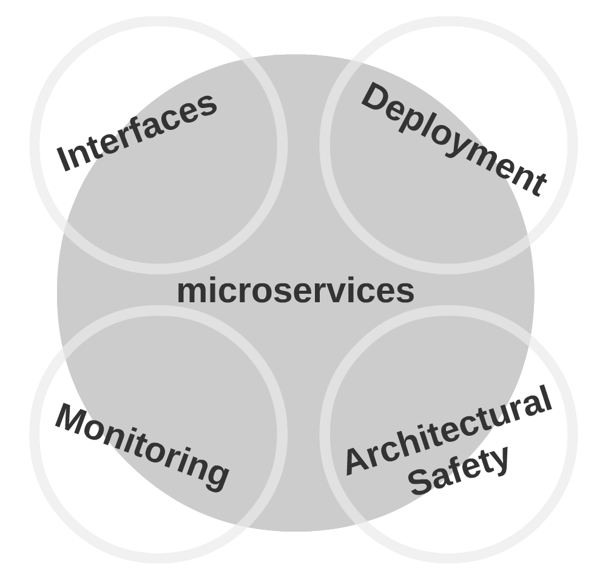
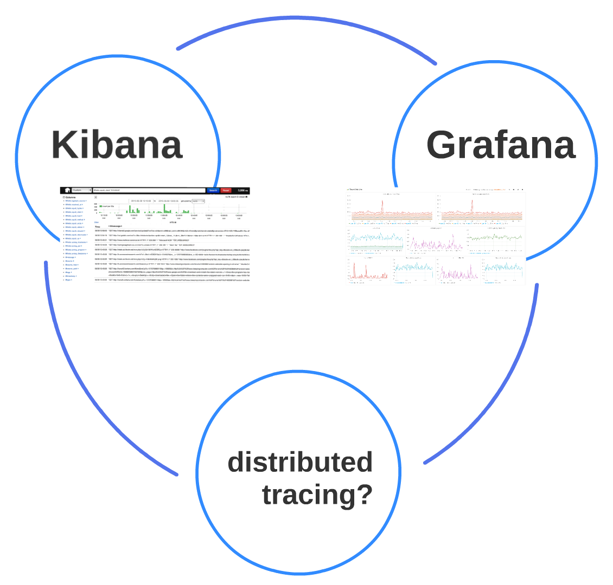
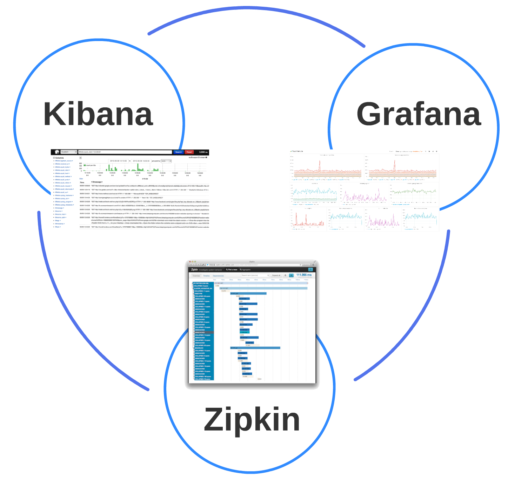
the missing piece for many is tracing and profiling difficult to reproduce problems
Zipkin
an implementation of Google's Dapper paper
Zipkin Install
git clone git@github.com:openzipkin/zipkin.git
mvn install -DskipTests
java -jar ./zipkin-server/target/zipkin-server-*exec.jar
open http://localhost:9411/
( or `docker run -d -p 9411:9411 openzipkin/zipkin` )
search traces
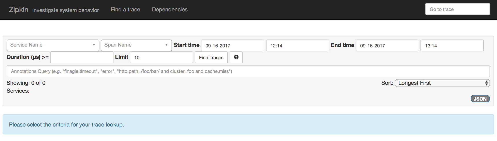
analyze one trace
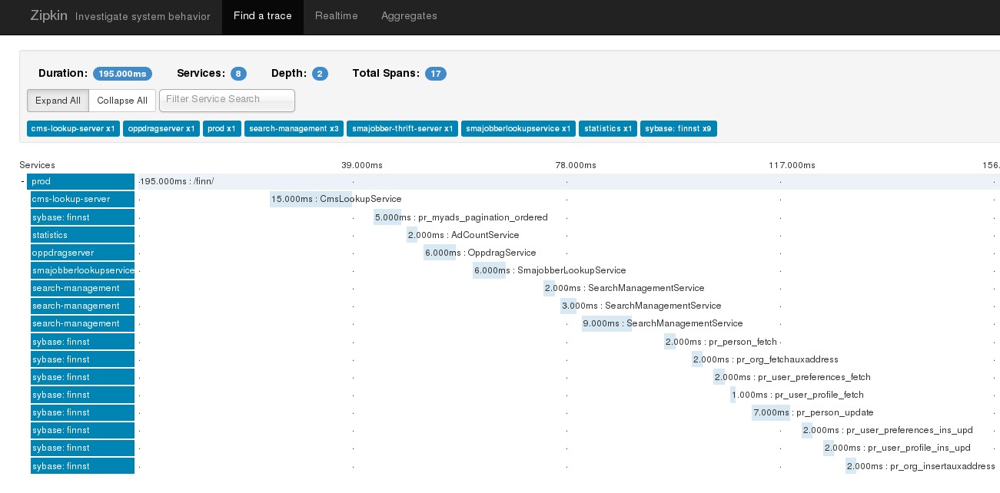
realtime in browser
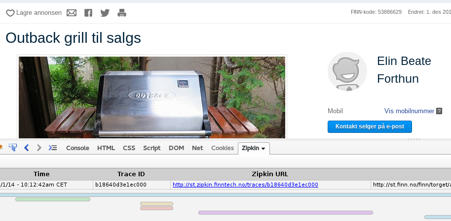
platform call graph
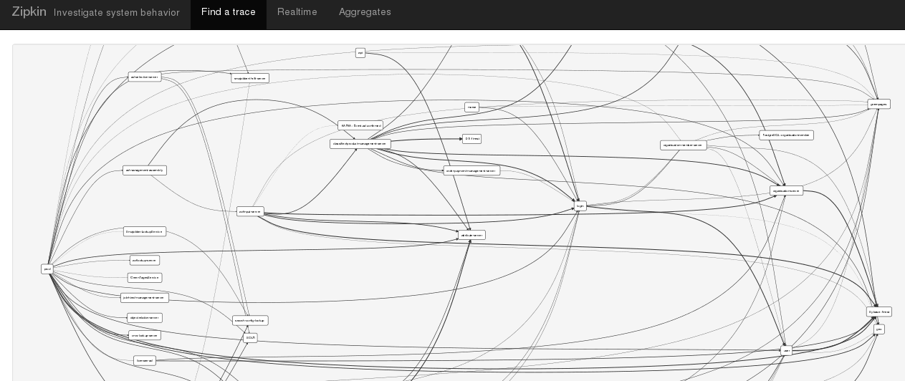
client | server
CS -->
--> SR
<-- SS
CR <--
Existing instrumentations
 |
simple http call
| 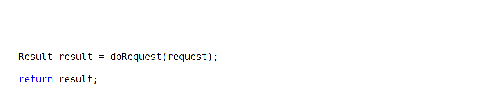 |
[ Brave – https://github.com/openzipkin/brave ]
simple http call
| 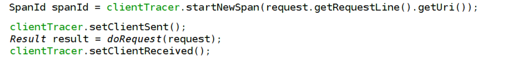 |
simple c* call
| 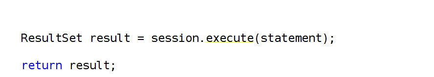 |
simple c* call
| 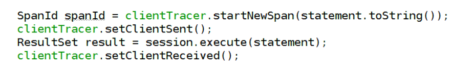 |
http call passing through headers
| 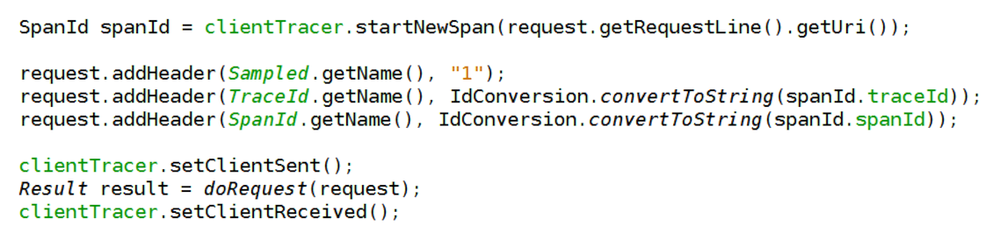 |

simple http call
[ opentracing – https://github.com/opentracing/opentracing-java ]
simple http call
| 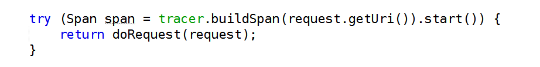 |
simple c* call
simple c* call
| 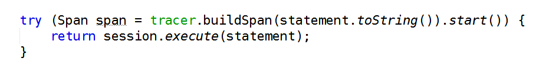 |
http call passing through headers
| 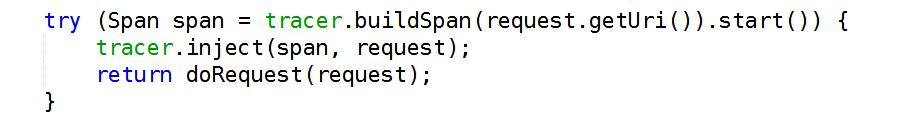 |
Tracing in C*
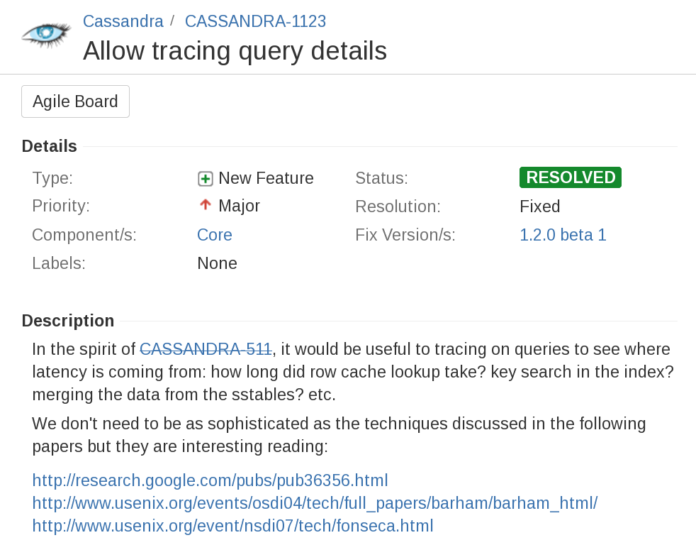Zipkin in C*
- visualization
- detailed timings
- hierarchy and asynchronisity
- zero tracing overhead
Cassandra-3.4
Download Cassandra-Zipkin-Tracing
git clone git@github.com:thelastpickle/cassandra-zipkin-tracing
mvn install
cp target/cassandra-zipkin-tracing-*.jar $CASSANDRA_HOME/lib/
cp lib/* $CASSANDRA_HOME/lib/
then run, enabling zipkin tracing
JVM_OPTS= \
"-Dcassandra.custom_tracing_class=com.thelastpickle.cassandra.tracing.ZipkinTracing" \
bin/cassandraZipkin across C*
Zipkin across C*
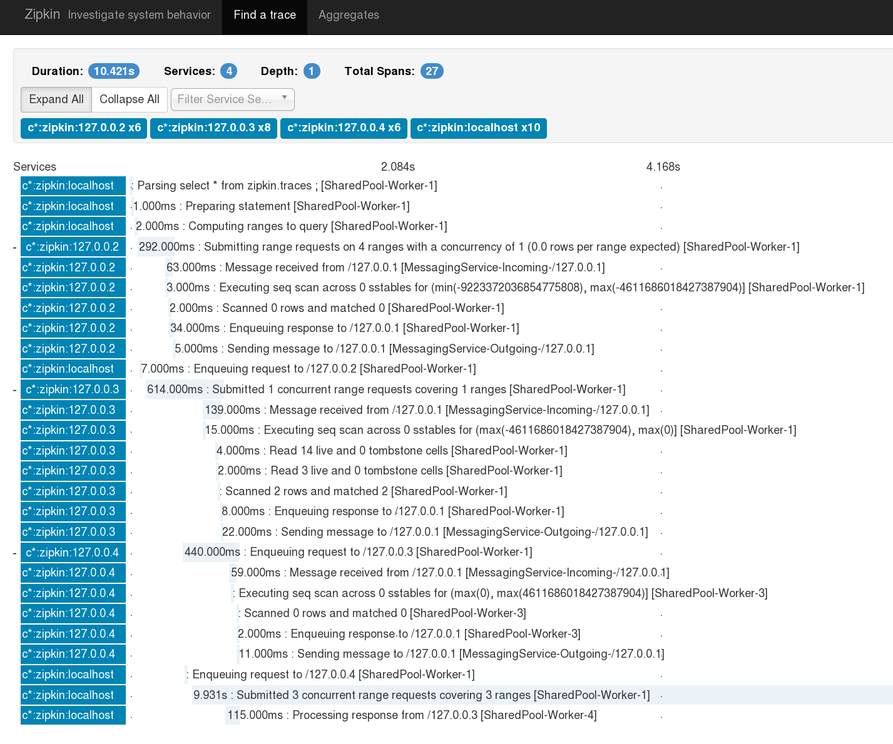Zipkin into C*
Zipkin into C*
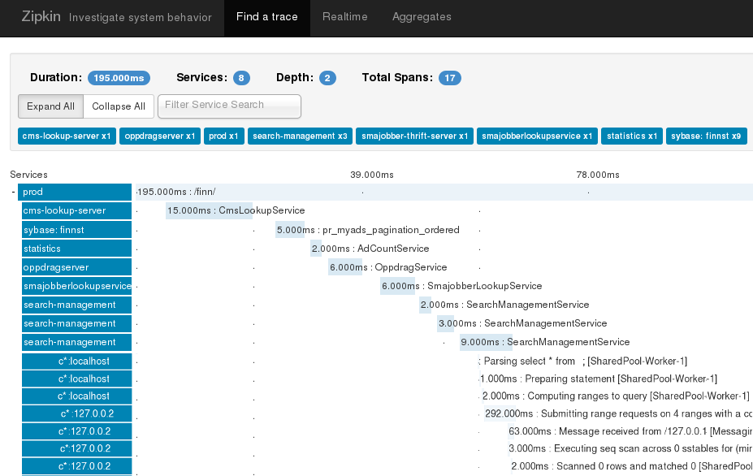
http call passing through headers
c* call using custom payload
| 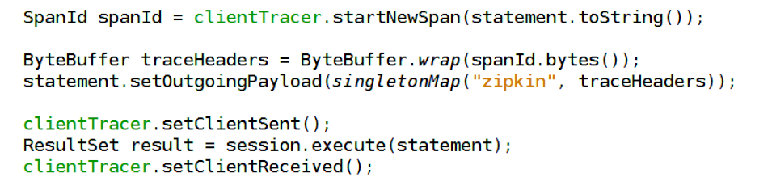 |
enable zipkin tracing and the custom payload handler
bin/cassandra
-Dcassandra.custom_tracing_class=..ZipkinTracing
-Dcassandra.custom_query_handler_class=..CustomPayloadMirroringQueryHandlerZipkin Self Tracing
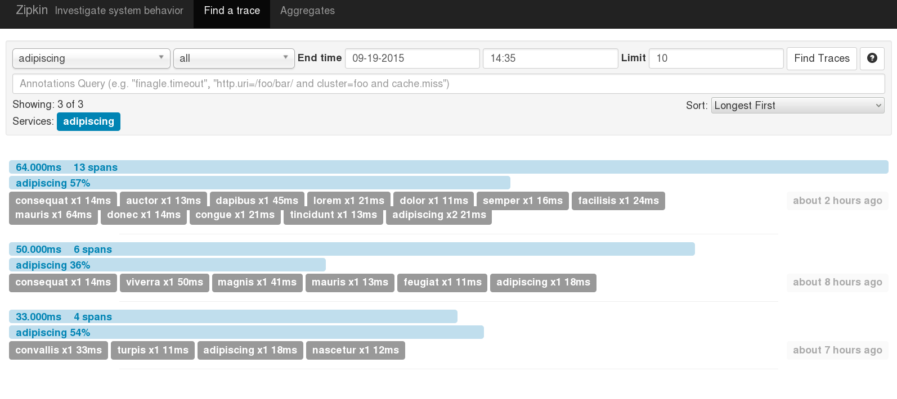analyze one trace
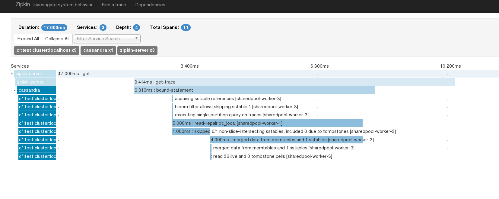
Zipkin on Cassandra-3.9
so much awesomeness
- UDT
- MATERIALIZED VIEW
- SASI
- TimeWindowCompactionStrategy
so much awesomeness
7 Tables --> 2 Tables
1.5k LOC removed
Performance!
Thanks
- Zipkin – github.com/openzipkin/zipkin
- Brave (zipkin java instrumentation) – openzipkin-brave
- OpenTracing (agnostic instrumentation) – opentracing-zipkin
- Zipkin Cassandra implementation (& this presentation)
– github.com/thelastpickle/cassandra-zipkin-tracing